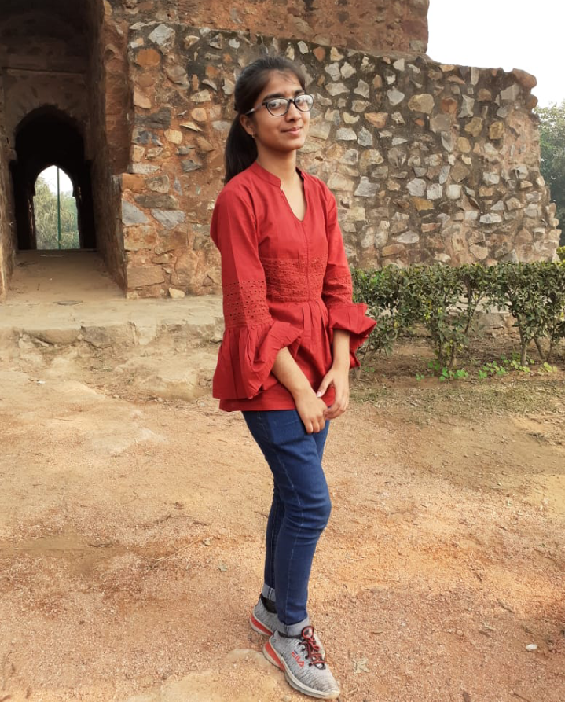
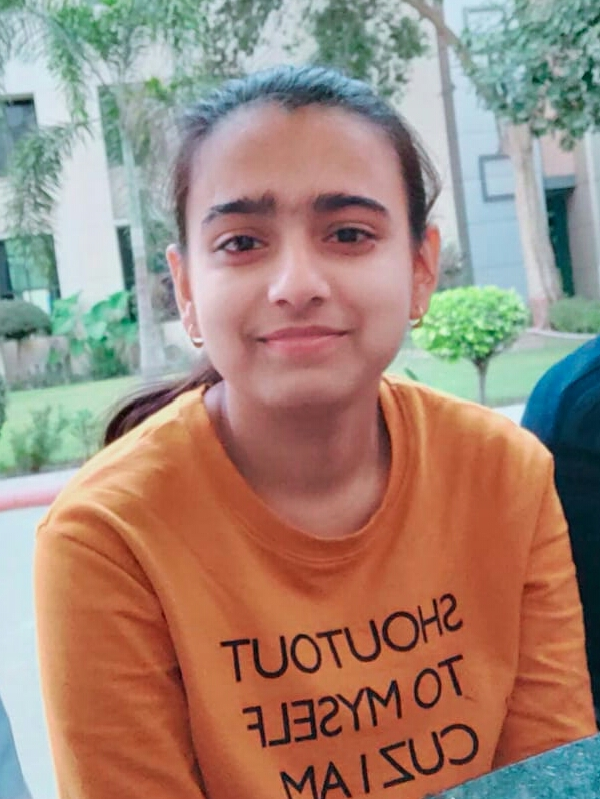
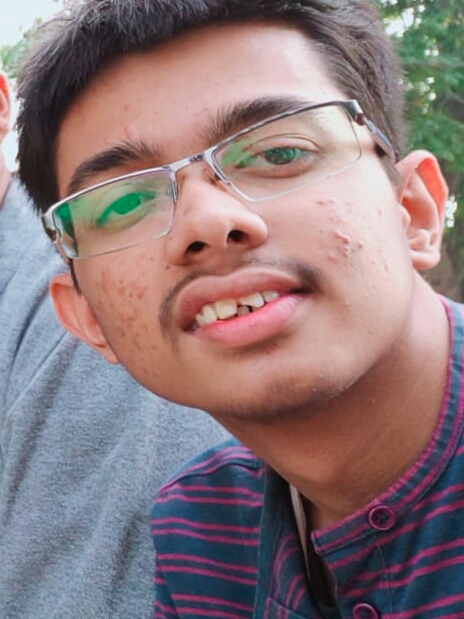
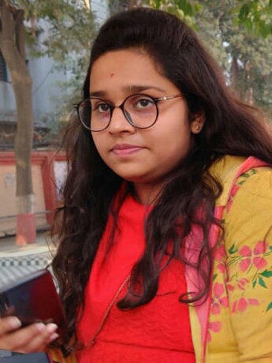
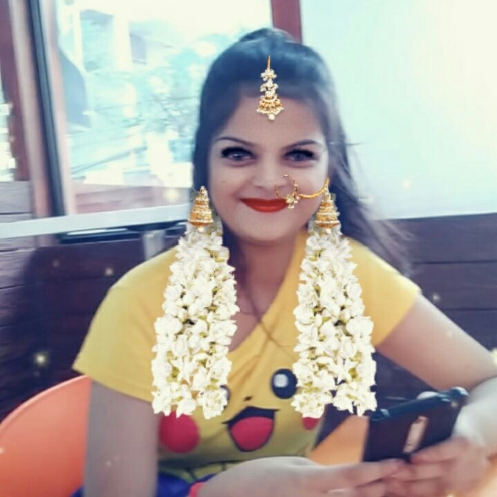
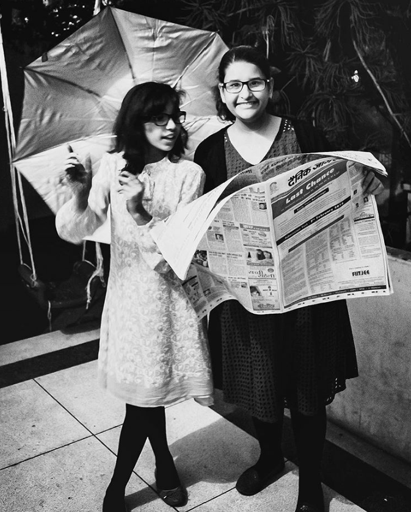
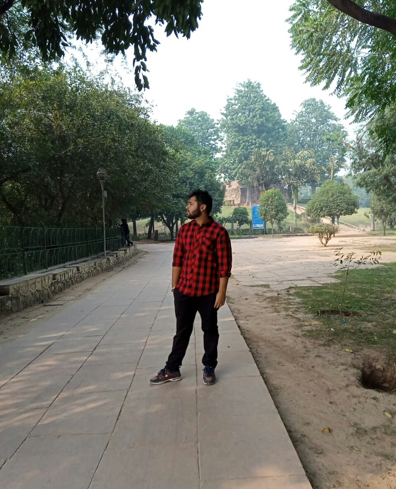

Gaurav Pandey
"Best friends are people who make your problems their problems, just so you don’t have to go through them alone."

Prerna Pandey
“Sweet is the memory of distant friends! Like the mellow rays of the departing sun, it falls tenderly, yet sadly, on the heart.”

Kanishka
“I like to listen. I have learned a great deal from listening carefully. Most people never listen.”Utkarsh
“Friendship is born at that moment when one person says to another, ‘What! You too? I thought I was the only one.”
Mohd. Arsh
“Don’t make friends who are comfortable to be with. Make friends who will force you to lever yourself up.”Kaustav
“A friend is someone who understands your past, believes in your future, and accepts you just the way you are.”Vanshika
“Ultimately the bond of all companionship, whether in marriage or in friendship, is conversation.”Harshit
“I don’t need a friend who changes when I change and who nods when I nod; my shadow does that much better.”
Amogh
“The real test of friendship is can you literally do nothing with the other person? Can you enjoy those moments of life that are utterly simple?”
Adishree
“Each friend represents a world in us, a world possibly not born until they arrive, and it is only by this meeting that a new world is born.”
Mahak Singh
“In the End, we will remember not the words of our enemies, but the silence of our friends.”
Apoorva
“If you go looking for a friend, you’re going to find they’re very scarce. If you go out to be a friend, you’ll find them everywhere.”

Pranit Puri
“You can always tell a real friend: when you’ve made a fool of yourself he doesn’t feel you’ve done a permanent job.”